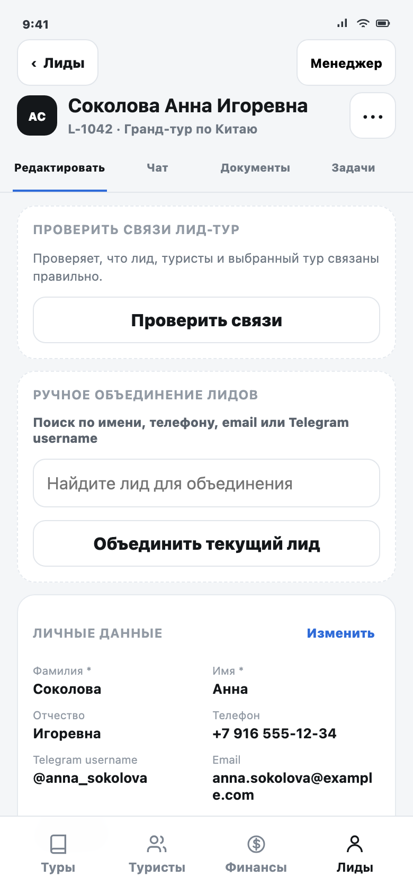
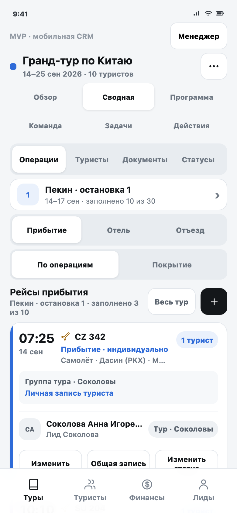
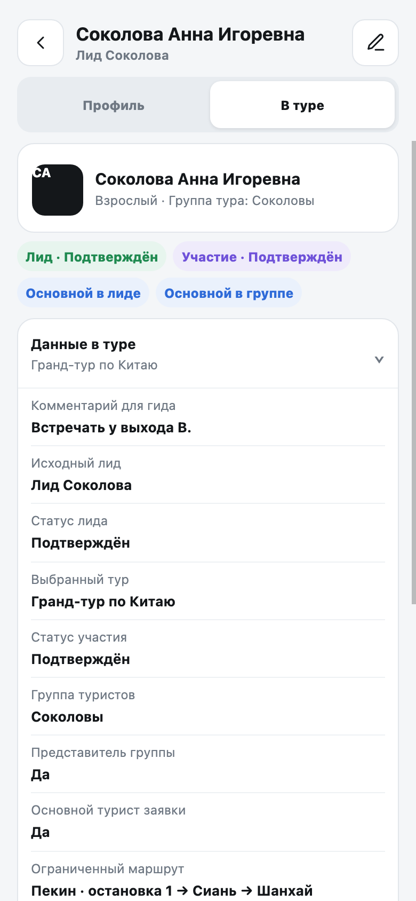

| Параметр | Значение |
|---|---|
| Статус | Финальное ТЗ всей текущей разработки; сейчас согласуется её прототип |
| Этап | Шаг 1 — согласование кликабельного прототипа. Шаг 2 — перенос согласованных решений в рабочее мобильное приложение |
| Главная страница прототипа | Открыть мобильную CRM |
| Стоимость всей текущей разработки | 390 000 ₽ за оба шага, подробный расчёт |
| Что меняется на шаге 1 | Только кликабельный прототип и это ТЗ; рабочая база не затрагивается |
| Что входит в шаг 2 | Рабочая реализация, серверная логика, проверка прав, тестирование и выпуск — без повторной оплаты уже учтённого объёма |
Прежнее ТЗ и работающая версия для гида не меняются. Вся новая логика добавляется поверх них и показывается только пользователям с нужными правами.
Это финальный ориентир для согласования. Сначала клиент проверяет понятные сценарии и экраны ниже. Точные поля, права и технические проверки находятся в свёрнутом приложении в конце документа.
Как читать это ТЗ
Документ состоит из двух частей:
- Клиентская часть показывает итоговый продукт, основные действия и экраны.
- Техническое приложение фиксирует все поля, права, проверки и ограничения для команды разработки.
Текущий этап — MVP кликабельного прототипа. Он показывает, как менеджер будет работать с лидами, туристами, турами, рейсами, отелями, отъездами и оплатой с телефона. Данные тестовые; рабочая база на этом этапе не меняется.
В прототипе можно проверить четыре роли: администратор, менеджер, сопровождающий и гид. Менеджерская часть не появляется у гида и сопровождающего без соответствующих прав.
Финальный результат после объединения
- единое меню и роли;
- карточки лида, туриста и тура;
- сводную, группы и конфликты;
- финансы и справочник;
- тестовые состояния без записи в рабочую базу.
- подключение рабочих данных;
- серверные права;
- массовые безопасные операции;
- тестирование и выпуск.
- веб-версия CRM;
- первая редакция для гида;
- существующие лиды, туры и туристы;
- действующая финансовая часть системы.
Веб-интерфейсы не заменяются и визуально не меняются. После согласования прототипа команда переходит ко второму шагу этой же разработки. Цена 390 000 ₽ уже включает рабочую реализацию описанного объёма; отдельно оцениваются только новые требования, которых нет в этом ТЗ.
Что именно изменится в рабочем приложении после согласования
- Гид по-прежнему начинает с «Задач» и видит только назначенные ему города и туристов.
- У менеджера появится единое меню: «Туры», «Туристы», «Финансы», «Лиды».
- Карточка туриста станет одной: вкладка «Профиль» хранит постоянные данные, вкладка «В туре» показывает участие в выбранном туре.
- В карточке тура появятся обзор, сводная, программа, команда, задачи и действия.
- Из лида можно будет открыть сводную связанного тура и вернуться назад без потери выбранного места.
- Общая запись рейса, отеля или отъезда не будет стирать личные данные туристов.
- «Финансы» сохранят действующую логику остатков, плательщика и отметки оплаты. Новая бухгалтерия не добавляется.
Карта единого продукта
ЛидЗаявка, контакт, сообщения, документы и задачи
→
ТуристыУчастники заявки с личными данными и документами
→
Тур и своднаяМаршрут, логистика, статусы и оплата всего тура
Прибытие
Отель
Отъезд
Это одно приложение с общей оболочкой. При переходе в «Лиды» не меняются верхняя панель, роль, нижнее меню и визуальный стиль. Возврат открывает тот же тур, город и операцию.
Внутри телефона сущности не смешиваются в одну карточку:
- в контексте лида менеджер работает с заявкой, контактом, сообщениями, документами и задачами;
- в контексте тура менеджер работает со всем составом, маршрутом, логистикой, статусами и остатками оплаты;
- из карточки лида можно открыть тот же тур с областью «Этот лид», не создавая копию данных.
Карточки остаются разными, потому что отвечают на разные вопросы. Лид хранит работу с заявкой, а тур показывает общую организацию поездки. При этом данные не дублируются.
Как читается одна и та же информация
| Веб-«Сводная таблица» | Мобильная сводная |
|---|---|
| Строка — турист | Сначала выбирается тур или турист |
| Группа колонок — позиция города | Затем выбирается остановка маршрута |
| Ячейка — прибытие, отель или отъезд | На экране открывается одна из трёх операций |
| Вся матрица видна одновременно | Общую картину показывает режим «Покрытие» |
Это разные представления одних данных. Мобильный интерфейс не создаёт копию веб-сводной и не меняет модель хранения.
Основной путь менеджера
1Открыть лидПроверить заявку и состав туристов
2Перейти в турНажать «Открыть сводную тура»
3Выбрать городОткрыть нужную остановку маршрута
4Заполнить логистикуПрибытие, отель и отъезд работают отдельно
5Проверить пробелыРежим «Покрытие» показывает, чего не хватает

На карточке лида блок «Сводная по туру» объясняет, что логистика хранится на уровне тура. Кнопка открывает весь связанный тур с фильтром по участникам текущего лида.

На основном экране одновременно видны выбранная остановка маршрута, одна из трёх операций, область «Этот лид / Весь тур» и тип каждой записи. Это мобильный эквивалент работы с выбранной ячейкой веб-таблицы.
Два режима сводной
- «По операциям» нужен для заполнения и изменения конкретного рейса, отеля или отъезда.
- «Покрытие» показывает по каждому туристу и каждой доступной остановке, какие из трёх операций уже заполнены.
Покрытие сохраняет смысл широкой веб-таблицы, но помещает данные одного туриста в вертикальную карточку. Незаполненная ячейка открывает форму нужного города и операции.
Как работает объединение туристов
АСАнналид 1
ИСИльялид 1
МОМариналид 2
ДВДенислид 2
ОтельОдин отель на четверых
ПрибытиеРейс A · 2Рейс B · 2
ОтъездЛичныйЛичныйЛичныйЛичный
Объединение одной операции не объединяет остальные. Можно жить вместе, прилететь разными рейсами и уехать отдельно.
Главное правило: объединение меняет только способ общего отображения. Личные записи каждого туриста сохраняются и снова становятся видны после разъединения.

Свободного туриста можно добавить в одну существующую группу. Две существующие группы не сливаются автоматически: сначала одну из них нужно разъединить.

Если выбранные туристы имеют разные данные, система останавливает применение. Менеджер сравнивает поля и явно выбирает основную запись. До этого момента ничего не меняется; индивидуальные данные остальных туристов сохраняются.

Разъединение выполняется в составе конкретной общей записи. Менеджер видит операцию, позицию маршрута, источник и участников, выбирает отделяемых туристов и подтверждает действие. Их личные данные снова становятся видимыми; общий отель, другие прибытия, отъезды и группа тура не изменяются.
Единая карточка туриста
Личная записьДанные конкретного туриста не удаляются
+
Общая записьПоказывает выбранный рейс, отель или отъезд группе
→
Что видно в своднойОбщее значение до разъединения, затем личное
Из лида, списка туристов, документов и операции открывается одна карточка туриста. В ней собраны профиль, паспорта, сканы, распознавание документов, маршрут, логистика, связи, группы и комментарии.

Для каждого города показаны прибытие, отель и отъезд. Изменение личной записи затрагивает только выбранного туриста. Если турист находится в общей записи, сводная показывает общее значение до разъединения.
Роли и справочник
АдминистраторВсе действия, удаление, управление турами и справочником
МенеджерНазначенные лиды, все операции доступного тура и группы туристов
СопровождающийРазрешённые поля и фактические статусы назначенного тура
ГидЗадачи и статусы только назначенных городов, без раздела «Лиды»

В форме самолёта доступны только аэропорты выбранного города, для поезда — ж/д вокзалы, для автобуса — автовокзалы. Одна активная точка предзаполняется только в пустое поле. Используемую точку можно архивировать, но нельзя удалить.

Поисковый экран показывает только точки подходящего типа и выбранного города. Если подходящей точки нет, пользователь может сохранить ручное значение с отметкой «Не из справочника».
Ролевые и системные сценарии
Пользователь с ролью «Гид» видит назначенный тур, разрешённые города и разрешённые поля карточки без кнопок изменения профиля, документов, логистики и групп.
В контексте «Сводная → Статусы» пользователь выбирает статус встречи, заселения или отъезда явным действием. Статус не переключается скрытым циклом и меняется только для выбранного города и операции.
Режим «Без подключения» оставляет сохранённые данные доступными для чтения, объясняет ограничение и блокирует любые изменения.

Границы MVP
Сейчас согласуется внешний вид и логика работы. После согласования начинается второй шаг уже оценённой разработки: подключение рабочей базы, серверных прав и безопасного массового сохранения. Виза, страховка, анкета и другие административные модули остаются в бэклоге и в сумму 390 000 ₽ не входят.
Главный приёмочный сценарий использует выбранных четырёх туристов из двух лидов. В туре могут находиться туристы из других лидов; они не входят в создаваемую группу и не меняются:
4 туриста→2 лида→1 группа тура→общий отель на 4→прибытия 2 + 2→личные отъезды→отделить одного
После отделения должны снова отображаться личные данные туриста. Другие операции и группа тура не меняются.
Состояния и адаптивность
- ошибка объясняет проблему и предлагает действие «Повторить»;
- пустое состояние объясняет отсутствие данных и следующий шаг;
- на 375×812 и 390×844 отсутствует горизонтальная прокрутка, а интерактивные области имеют размер не меньше 44×44 px.


Сценарии, которые нужно проверить перед согласованием
Каждый сценарий ниже начинается с готовых тестовых данных. Нажмите ссылку, выполните короткий путь и сравните результат с зелёным блоком. Так прототип можно принять без чтения технического приложения.
Из лида в связанный турРоль: менеджер
- Открыть карточку Анны Соколовой.
- Проверить состав туристов.
- Нажать «Открыть сводную тура».
- Вернуться в «Лиды».
Правильный результат Открывается именно тур этого лида, а после возврата сохраняются выбранный тур и место работы.
Начать сценарийЗаполнить логистику тураРоль: менеджер
- Выбрать остановку маршрута.
- По очереди открыть «Прибытие», «Отель» и «Отъезд».
- Переключить «Этот лид / Весь тур».
- Открыть режим «Покрытие».
Правильный результат Менеджер видит, у кого данные уже заполнены, а у кого ещё нет.
Начать сценарийОбъединить туристов4 туриста из 2 лидов
- Выбрать четырёх туристов.
- Создать одну группу тура.
- Назначить им один общий отель.
- Разделить прибытия на две пары, а отъезды оставить личными.
Правильный результат Туристы живут вместе, но могут прилететь разными рейсами и уехать отдельно.
Начать сценарийРазрешить конфликт и отделить туристаБез потери личных данных
- Выбрать туристов с разными рейсами.
- Сравнить записи на экране сверки.
- Выбрать основную запись.
- Отделить одного туриста от общей операции.
Правильный результат До подтверждения ничего не меняется. После отделения снова видна личная запись туриста, а отель и другие операции остаются прежними.
Начать сценарийПроверить оплатуРоль: менеджер
- Открыть «Финансы».
- Найти заявку с остатком.
- Проверить плательщика и валюту.
- Отметить получение оплаты и отменить отметку.
Правильный результат Одна заявка показывается одной карточкой, суммы разных валют не складываются между собой.
Начать сценарийУбедиться, что версия гида сохраненаРоль: гид
- Переключиться на роль «Гид».
- Открыть задачи, туристов и статусы своего города.
- Проверить доступные финансы.
- Включить режим без подключения.
Правильный результат Гид продолжает работать по знакомому сценарию и не видит лиды или закрытые данные менеджера.
Начать сценарий
Финальные экраны прототипа
Ниже — актуальные экраны телефона 390×844. Номера поверх интерфейса связывают элемент с подписью. Полный перечень полей и правил находится в техническом приложении.
- ЛидТур и туристы
- ПодтверждениеОткрывает логистику
- СводнаяОстановка и операция
- Группа тураТуристы связаны на весь тур
- Общая операцияОтель, прибытие или отъезд
- СверкаВыбор основной записи
- РазъединениеЛичные данные снова видны
Техническое приложение для команды разработкиПолный каталог полей, правил, API-контрактов, критериев и бэклога. Клиенту не нужно читать его для согласования сценариев.+
- MERGE-01. После переноса пользователь видит одно мобильное приложение, а не «старую» и «новую» редакции рядом.
- MERGE-02. Desktop Leads и Event Summary не получают визуальных изменений из этой задачи.
- MERGE-03. Переход на новые экраны не создаёт второй master-record лида, туриста, тура или визита.
- MERGE-04. Ни один экран, статус, контакт, финансовое действие или маршрутное ограничение первой редакции гида не удаляется и не меняет права без отдельного согласования.
1. Цель и границы
Веб-«Сводная таблица» работает с участником конкретного тура, его индивидуальными данными и независимыми общими записями логистики. В текущей мобильной версии турист и сводная реализованы несколькими несовместимыми способами. Задача прототипа: объединить их вокруг раздела «Туры», одной карточки туриста и одной модели групп.
Текущий этап меняет только статический прототип, mock-данные, smoke-тест и это ТЗ. Рабочее мобильное приложение, desktop, API, база данных и серверные права не изменяются.
- SCOPE-01. Прототип не обращается к production
API и внешним ресурсам. Все изменения выполняются в памяти или
localStorage. - SCOPE-02. Публичная шапка содержит один
продуктовый пункт «Лиды, туры и сводная». Внутри manager-сценария
доступны «Туры → Туристы → Финансы → Лиды»; для
viewer/escortсохраняется оболочка первой редакции «Задачи → Туристы» и условные «Финансы». - SCOPE-03. Лид, турист и тур остаются разными сущностями и контекстами одного сценария. Из назначенного лида открывается сводная того же тура с фильтром «Этот лид» и гарантированным возвратом.
- SCOPE-04. Прежнее ТЗ приложения гида и рабочие приложения не изменяются; его работа зафиксирована как обязательная регрессионная база, а меняется только изолированный MVP-прототип текущей задачи.
- SCOPE-05. Markdown-файл является единственным источником требований текущей задачи.
1.1. Этап MVP и основные пользовательские сценарии
Текущая разработка обозначается как этап MVP мобильной CRM. Его задача — проверить на кликабельном прототипе основную ежедневную работу веб-«Сводной таблицы» до переноса в рабочее приложение и подключения production API.
MVP считается пригодным для следующего этапа, если менеджер может подготовить один тур целиком с телефона, а viewer с подписью «Гид» или сопровождающий может получить разрешённые данные и отметить фактическое выполнение операций без доступа к лидам и закрытым персональным полям.
| Сценарий веб-версии | Роль | Мобильный путь | Ожидаемый результат |
|---|---|---|---|
| Создать лид и основной профиль | Manager / Admin | «Лиды» → «Создать» → анкетные и паспортные блоки | Лид и автоматически созданный основной турист используют те же поля, что web LeadForm |
| Добавить остальных туристов | Manager / Admin | Лид → «Редактировать» → «Туристы» → «Добавить» | Каждый турист независим и открывается в канонической карточке |
| Подготовить логистику тура | Manager / Admin | «Туры» → тур → «Сводная» → остановка → операция | Видны все участники тура и покрытие прибытия, отеля и отъезда |
| Исправить данные одного туриста | Manager / Admin | Карточка туриста → «Маршрут и логистика» → «Изменить личную запись» | Меняются только ownValues выбранного туриста |
| Создать общие записи | Manager / Admin | Выбрать туристов из разных лидов → создать группу тура → отдельно объединить операции | Общий отель, прибытия и отъезды имеют независимые
subgroupId |
| Разрешить конфликт | Manager / Admin | Массовое действие → «Сверка данных» → выбрать источник → применить | Общая запись ссылается на выбранный
sourceVisitId, личные данные остальных
сохраняются |
| Отделить от одной операции | Manager / Admin | Общая запись → «Состав» → «Отделить» | Личная логистика снова видна; другие операции и
groupId не меняются |
| Расформировать группу тура | Manager / Admin | Группа тура → «Расформировать» → подтверждение | Зависимые общие связи снимаются, индивидуальные значения сохраняются |
| Дозаполнить профиль и документы | Manager / Admin | «Туристы» или «Документы» → карточка → нужный раздел → OCR/редактирование | Готовность пересчитывается, OCR применяет только выбранные поля |
| Работать из конкретного лида | Manager | «Лиды» → лид → «Сводная по туру» | Открывается тот же тур с областью «Этот лид» и возвратом в прежний контекст |
| Отметить факт выполнения | Manager / viewer («Гид») / Escort |
Тур → «Сводная» → «Статусы» → встреча, заселение или отъезд | Меняется только разрешённый операционный статус выбранного города |
| Обновить тур, программу и команду | Manager / Admin | Тур → «Обзор / Программа / Команда / Задачи» | Поля, назначения и TaskWidget сохраняют web-порядок и роли |
| Перенести стыковку между городами | Manager / Admin | Сохранить отъезд → открыть следующую остановку | Заполняются только пустые соответствующие поля следующего прибытия |
| Выгрузить сводную | Manager / Admin | Тур → «Сводная» → «Excel» | Создаётся файл только по доступному составу без изменения CRM |
| Получить остаток оплаты | Manager / Admin / назначенный финансовый гид / роли Morocco | «Финансы» → заявка → «Оплачен» | Меняется только remainingPaymentCollected; сумма
и состав заявки сохраняются |
| Обслужить справочник | Admin | Меню тура → «Города и точки» | Изменённые mock-точки сразу используются в формах; используемые записи архивируются |
| Проверить данные в поле | viewer («Гид») / Escort |
Тур → сводная или карточка туриста | Доступны только назначенный тур/города и разрешённые поля без мутаций логистики |
| Продолжить работу первой редакции | viewer («Гид») / Escort |
«Задачи» → город → встреча, отель, отъезд или программа | Сохраняются прежняя стартовая область, контакты, статусы и доступная нижняя навигация |
- MVP-01. Текущая разработка является MVP мобильной CRM и проверяет основные сценарии веб-«Сводной таблицы» в кликабельном прототипе.
- MVP-02. В границы MVP входят единая сводная тура, одна карточка туриста, индивидуальная и групповая логистика, документы, операционные статусы, роли, остатки оплаты и mock-справочник.
- MVP-03. Рабочее приложение, production API, база данных и серверные права остаются следующим этапом после проверки и согласования MVP.
- FLOW-01. Менеджер открывает «Туры → Тур → Сводная», выбирает позицию маршрута и операцию и видит всех доступных участников и покрытие данных.
- FLOW-02. Менеджер изменяет личную запись одного туриста без изменения общей записи и личных данных других участников.
- FLOW-03. Менеджер выбирает ровно четырёх туристов из двух лидов одного тура, объединяет их в группу и независимо создаёт общие прибытия, отель и отъезды. Другие участники этого тура остаются вне выбранной группы и не меняются.
- FLOW-04. При конфликте менеджер сначала сверяет варианты и явно выбирает источник; до подтверждения данные не меняются.
- FLOW-05. Менеджер отделяет туриста от одной общей операции и получает сохранённые личные значения без изменения других операций или группы тура.
- FLOW-06. Менеджер открывает единую карточку туриста, дозаполняет профиль и документы, проверяет OCR и видит пересчитанную готовность.
- FLOW-07. Менеджер открывает сводную из лида с областью «Этот лид» и возвращается в тот же раздел, фильтры и позицию прокрутки.
- FLOW-08. Manager, viewer или escort меняет разрешённый операционный статус явным выбором только в доступном туре и городе.
- FLOW-09. Администратор управляет mock-справочником городов и точек, а мобильные формы сразу используют актуальные активные записи.
- FLOW-10. Роли
viewerиescortпросматривают только разрешённые поля назначенного тура, не видят раздел «Лиды» и не могут изменить профиль, логистику, группы или документы. - FLOW-11. Менеджер полностью расформировывает группу тура; зависимые общие связи снимаются, а индивидуальные данные всех участников сохраняются.
- FLOW-12. Пользователь с доступом к «Финансам» видит остатки по заявкам, плательщиков и валютные итоги, отмечает получение или отменяет отметку без изменения суммы.
- FLOW-13. Гид начинает работу в прежней области «Задачи», выбирает назначенный город и продолжает сценарии встречи, отеля, отъезда, программы и туристов без доступа к лидам.
1.2. Публикация MVP без слияния
Текущая разработка хранится только в ветке
prototype/mobile-crm-2026-08-03. Этот этап не создаёт
PR и не сливается в main или develop, но
именно эта ветка является источником согласованной публикации
GitHub Pages.
Финальная передача содержит точный commit SHA и три проверенные страницы: прототип, ТЗ и КП. Контрольная сумма Markdown, сгенерированный HTML, скриншоты, результаты smoke и опубликованная версия относятся к одному commit SHA.
- DELIVERY-01. Все файлы MVP находятся в
prototype/mobile-crm-2026-08-03;mainиdevelopне меняются. - DELIVERY-02. Для текущего этапа не создаются PR и merge; Pages публикует прототипную ветку.
- DELIVERY-03.
https://nvrtsky.github.io/unique-guide-app/tour-operations.htmlотвечает HTTP 200 и показывает текущий единый MVP. - DELIVERY-04. Рядом без 404 открываются
mobile-leads-tz.htmlиcommercial-proposal.html. - DELIVERY-05. HTML, скриншоты и результаты проверок воспроизводятся из указанного SHA без незакоммиченных файлов.
2. Каноническая модель участника тура
Участник тура собирается из цепочки:
LeadTourist → Contact → Deal → CityVisit
leadTouristIdхранит анкету и паспортные данные.contactIdсвязывает контакт и чат.dealIdсвязывает участие в туре, группу и операционные статусы.leadIdуказывает исходный лид.groupIdобозначает группу туристов на уровне тура.routeCityId + cityIdxоднозначно обозначают позицию маршрута.subgroupIdобозначает общую запись одной операции в одной позиции маршрута.
Технические поля order,
isAutoCreated, даты создания и внутренние ID не
показываются в обычной карточке.
- MODEL-01. Все входы из «Лидов», «Туристов»,
«Операций» и «Документов» открывают одну каноническую карточку по
стабильному
touristId. - MODEL-02. ФИО, телефон, email, дата рождения, паспортные данные, комментарии и связи имеют один mock-источник и одинаково отображаются во всех разделах.
- MODEL-03. Возврат из карточки сохраняет исходный тур, город, этап, фильтр по лиду и режим списка.
- MODEL-04. Ограниченный маршрут туриста
хранится как список
routeCityId, а не названий городов.
3. Информационная архитектура
Единый публичный вход «Лиды, туры и сводная»
└─ Manager / Admin
├─ Туры
│ └─ Карточка тура
│ ├─ Обзор
│ ├─ Сводная
│ │ ├─ Операции
│ │ ├─ Туристы
│ │ ├─ Документы
│ │ └─ Статусы
│ ├─ Программа
│ ├─ Команда
│ ├─ Задачи
│ └─ Действия
├─ Туристы
│ └─ Единая карточка
│ ├─ Профиль
│ └─ В туре
├─ Финансы [по capabilities]
└─ Лиды [только admin / manager]
└─ Карточка лида
├─ Редактировать
├─ Чат
├─ Документы
└─ Задачи
Viewer / Escort · первая редакция
├─ Задачи
├─ Туристы
└─ Финансы [только при действующем доступе]Витрина и продукт едины. Внутренние области нужны для понятной
навигации по разным сущностям и правам. «Туристы» открывает ту же
каноническую карточку, которая доступна из лида и сводной. Роли
viewer и escort не получают «Лиды».
«Финансы» появляются только при том же capability, что в рабочем
приложении.
- IA-01. Для admin и manager нижнее меню идёт
Туры → Туристы → Финансы → Лиды, если Finance разрешён; для viewer и escort сохраняетсяЗадачи → Туристы → Финансы при доступе, без «Лидов». - IA-02. Карточка тура идёт строго
Обзор → Сводная → Программа → Команда → Задачи → Действия. - IA-03. Карточка лида идёт строго
Редактировать → Чат → Документы → Задачи. - IA-04. Базовый профиль и контекст конкретного тура — два режима одной карточки туриста, а не две сущности.
- IA-05. Для сводной доступны области «Весь тур» и «Этот лид». Область меняет только видимый состав.
- IA-06. Позиция маршрута выбирается одной кнопкой, открывающей полноэкранный список городов.
- IA-07. Горизонтальная таблица и длинная горизонтальная лента городов не используются.
- IA-08. Повторяющийся город подписывается номером остановки и датами. Его операции не смешиваются с другой остановкой.
- IA-09. Возврат из лида, туриста или операции
сохраняет тур,
routeCityId, область, фильтры и позицию прокрутки. - IA-10. Вложенные режимы сводной идут строго
Операции → Туристы → Документы → Статусы. Прямая ссылкаtour-operations.html?tourId={tourId}&view=statusesоткрывает карточку тура, активирует «Сводная → Статусы» и сохраняет остальные параметры контекста. - IA-11. Публичная шапка не содержит отдельных пунктов «Лиды» и «Туры и сводная»; технический deep link карточки лида не считается отдельной редакцией продукта.
4. Карточки лида и тура
Мобильная компоновка может быть вертикальной, полноэкранной или разбитой на раскрывающиеся блоки. Название, смысл и порядок web-разделов и полей менять нельзя.
4.1. Карточка лида
Верхний уровень повторяет LeadEditModal:
- «Редактировать»;
- «Чат»;
- «Документы»;
- «Задачи».
Вкладка «Редактировать» существующего лида
Порядок сверху вниз:
- «Проверить связи лид–тур» — только для лида с туром и разрешённой роли;
- «Ручное объединение лидов» — поиск по всем неархивным лидам, направление переноса данных и preview;
- «Личные данные»;
- «Тур и оплата»;
- «Настройки»;
- «UTM-трекинг» — только для чтения и только при наличии хотя бы одного значения;
- «Примечание»;
- «Туристы»;
- нижние действия web-формы;
- мобильный переход «Сводная по туру» после канонической формы.
На телефоне вкладка «Редактировать» использует два слоя. Lead Read surface показывает актуальные значения карточками в указанном выше порядке. Кнопка «Изменить» у блока открывает полноэкранный редактор и сразу переводит фокус к выбранному блоку.
Полноэкранный редактор использует ту же каноническую форму, а не сокращённую копию. Блоки остаются в web-порядке, поля выбранного блока идут в порядке таблицы ниже, проверки и outcome flow не меняются. Закрытие возвращает пользователя на прежний блок и позицию прокрутки Lead Read surface. Действия «Проверить связи» и «Ручное объединение» остаются перед карточками, footer идёт после «Туристов», а «Сводная по туру» располагается после footer.
| Блок | Поля в точном порядке |
|---|---|
| Личные данные | Фамилия → Имя → Отчество → Телефон → Telegram username → Email → Telegram User ID, только чтение и только при наличии |
| Тур и оплата | Тур с поиском → позиции маршрута по стабильным
routeCityId → стоимость тура → валюта стоимости →
аванс → валюта аванса → остаток → валюта остатка → статус оплаты,
только чтение → способ оплаты, только чтение → booking ID, только
чтение → тип номера → категория отелей → трансферы → питание |
| Настройки | Категория клиента → статус → источник → ответственный → цветовой индикатор |
| UTM-трекинг | utmSource → utmMedium → utmCampaign → utmTerm → utmContent → pageUrl |
| Примечание | notes |
Статусы используют действующий контракт:
new=Новый, contacted=Квалифицирован,
qualified=Забронирован,
converted=Подтверждён, lost=Отложен
(lostFilter=Отложен/потерян). Выбор lost
открывает отдельный outcome flow: postponed требует
дату и причину; failed требует причину потери. Отмена
не меняет статус.
Нижняя строка формы идёт Удалить лид только
администратору → Обновить. Переход «Сводная по туру»
не вклинивается между этими действиями.
Создание лида
До первого сохранения используются те же поля, но другой состав блоков:
Личные данные → Дата рождения → Паспорт РФ → Загранпаспорт → Тур и оплата → Настройки → Примечание → Создать.
Дата рождения и оба паспортных блока записываются в автоматически создаваемого основного туриста. Проверка связей, ручное объединение, UTM, четыре вкладки карточки и список туристов появляются только после первого сохранения. Остальных туристов менеджер добавляет затем через «Добавить туриста».
Остальные вкладки лида
«Чат» воспроизводит семь состояний
Wazzup24Chat: не настроен, нет контакта, загрузка, ошибка, пустой URL, iframe готов, сообщение о сохранённом channel ID. Прототип ничего не загружает извне.«Документы» содержит ровно «Договор» и «Лист бронирования» с действиями подготовки DOCX.
«Задачи» повторяют
TaskWidget: счётчики и группыtodo → in_progress → done, название, описание, приоритетlow | medium | high | urgent, срок, просрочку, карточку изменения и подтверждение удаления. Статусаcancelledнет.Логистика закрыта до
status=converted. После подтверждения «Открыть сводную тура» передаётtourId, область «Этот лид» и контекст возврата.LEAD-01. Четыре вкладки, Lead Read surface, блоки полноэкранного редактора и поля идут в указанном порядке; переход между слоями не переставляет действия и не создаёт вторую модель лида.
LEAD-02. Create-flow не показывает edit-only блоки и создаёт одного основного туриста из анкетных полей.
LEAD-03. Тур выбирается поиском, а ограниченный маршрут хранит ID позиций, а не текстовые названия.
LEAD-04. Ручное объединение не вводит искусственный запрет по разным турам: пользователь выбирает направление и подтверждает preview.
LEAD-05. Из лида доступны «Добавить туриста», единая карточка туриста и сводная связанного тура.
LEAD-06. Роли
viewerиescortне получают пункт «Лиды», список, карточку или данные лида по прямой ссылке. Manager получает список и карточки только назначенных лидов. Delete доступен только admin.LEAD-07. Прямой URL запрещённого лида открывает экран
forbiddenбез ФИО, контактов, туристов и других данных лида; запрет нельзя обойти программным кликом.
4.2. Карточка тура
Web не имеет одной формы с названием «карточка тура». Mobile
aggregator сохраняет контракты трёх действующих поверхностей:
EventCard, EditEventDialog и
EventSummary.
Список и «Обзор»
Порядок EventCard:
- цветовой индикатор, если включён;
- название, заполненность логистики, тип тура и системные плашки архива/отмены;
- страна и города;
- даты и базовая цена с валютой, если роль вправе видеть;
- забронированные места и лимит, затем подтверждённые, ожидающие, отменённые и плашка заполнения;
- описание;
- сайт, если роль вправе видеть;
- действия
Сводная → открыть сводную в новой вкладке → копировать → изменить → удалитьс учётом права и переданного handler.
Роль viewer с подписью «Гид» видит даты только
назначенных позиций маршрута. Для viewer и
escort цена и сайт скрыты.
Полноэкранное изменение тура
Порядок EditEventDialog:
- название;
- описание;
- URL сайта;
- страна;
- тип тура;
- позиции маршрута
routeCitiesв сохранённом порядке: добавление, удаление и перемещение; - гид каждой позиции по
routeCityIdи признак города сбора оплаты; - сопровождающий;
- администраторы чата;
- дата начала;
- дата окончания;
- лимит участников;
- базовая цена;
- валюта;
- цвет;
- контекстные действия lifecycle и
Отмена → Сохранить.
Пользовательские селекторы работают по существующим user ID, поддерживают поиск и повторяют доступные web-роли. Team — read-only проекция тех же назначений, а не второй набор данных.
Остальные разделы тура
- «Сводная» содержит участников, лиды, группы, логистику, покрытие и фактические статусы.
- «Программа» хранит
dayNumber → date → city → cityIdx → description.dayNumberиdateread-only; редактируются только город и описание. Произвольного добавления/удаления дня и поляtitleнет. Доступны генерация каркаса, повторная генерация, очистка с подтверждением и шаблоны описаний. - «Команда» показывает гидов по позициям маршрута, город сбора оплаты, сопровождающего и администраторов чата.
- «Задачи» используют тот же
TaskWidget(entityType=event)сtodo | in_progress | done. - «Действия» сохраняют порядок
EventCardи отдельно показывают разрешённые lifecycle-действия.
Close/reopen доступны admin и manager; archive/unarchive и delete — только admin в мобильном UI. Отменённый тур остаётся в фильтре «Архив» и может быть открыт повторно. Архивирование запоминает предыдущее состояние: черновик после восстановления остаётся черновиком. Копия любого тура всегда создаётся чистым неархивным черновиком без причины отмены. Все lifecycle-действия сохраняют туристов, документы и логистику и синхронно меняют архив связанных лидов согласно текущему web-поведению.
- TOUR-01. Шесть разделов идут
Обзор → Сводная → Программа → Команда → Задачи → Действия. - TOUR-02. Overview и список сохраняют точный
порядок
EventCard, включая ролевое скрытие цены и сайта. - TOUR-03. Форма изменения сохраняет все поля
EditEventDialogот названия до цвета и не подмешивает в саму форму выдуманные поля прибыли или расходов. Остатки оплаты открываются отдельным capability-driven экраном «Финансы». - TOUR-04. Программа и задачи используют действующие web-модели без придуманных полей и статусов.
- TOUR-05. Lifecycle-действия видны только в разрешённых состоянии и роли; повторное открытие допустимо только из состояния «Отменён», а запрещённый программный клик ничего не меняет.
- TOUR-06. Позиция маршрута, её
routeCityIdи назначенный пользователь сохраняются одной связкой. Пустая промежуточная строка не сдвигает гида следующего города; выбранный город сбора оплаты сохраняется только пока эта позиция остаётся в маршруте. - TOUR-07. Ссылка на публичную страницу тура в прототипе является локальным mock-действием: она объясняет будущее поведение, но не открывает внешний адрес и не создаёт сетевой запрос.
5. Единая карточка туриста
Web содержит две близкие поверхности:
TouristDialog внутри лида и
TouristDetailsDialog в сводной. Mobile не выбирает
одну из них и не создаёт третью модель. Он показывает один базовый
профиль, а данные участия и логистики добавляет только в контексте
конкретного тура.
Первый экран содержит только разрешённые конкретной роли данные
и действия. Admin и manager назначенного лида видят полный
профиль, готовность, контакты и оба независимых признака
«основной». Manager доступного тура, которому исходный лид туриста
не назначен, видит имя и операционный контекст участия, но не
видит исходный лид, контакты, анкету, документы, заметку и
признаки основного туриста. Роли viewer и
escort получают только закрытый перечень раздела
10.
5.1. Профиль: пять web-разделов
| № | Раздел | Поля в точном порядке |
|---|---|---|
| 1 | Личные данные | Фамилия → Имя → Отчество → Дата рождения → Email → Телефон |
| 2 | Гражданство | Россия / Казахстан |
| 3 | Паспорт РФ | Серия и номер → Кем выдан → Адрес регистрации |
| 4 | Загранпаспорт и сканы | ФИО латиницей → Номер → Годен до → Список сканов → Загрузить/сфотографировать → Просмотреть → Удалить → OCR |
| 5 | Тип и настройки | Взрослый/ребёнок/младенец → Основной турист заявки → Заметка
leadTourists.notes |
Для гражданина Казахстана паспорт РФ скрывается, но сохранённые ранее значения не удаляются. Форма сохранения требует только фамилию и имя. Nullable-поля можно оставить пустыми; индикатор готовности показывает, что нужно дозаполнить, но не запрещает сохранить черновик.
OCR всегда открывает сверку распознанных и текущих значений. Отмена ничего не меняет. Apply меняет только отмеченные пользователем поля.
5.2. «В туре»: контекст конкретного участия
Контекст строится по eventId + dealId и идёт в
таком порядке:
- комментарий для гида
guideComment; - исходный лид и его статус;
- выбранный тур и статус участия;
- группа туристов
deal.groupId; - представитель группы и
deal.isPrimaryInGroup; - «Основной турист заявки»
leadTourist.isPrimaryкак отдельный признак; - ограниченный маршрут лида
selectedCityIds; - три фактических статуса: прибытие, заселение, отъезд;
- логистика по каждой доступной позиции
routeCityId: личное значение, отображаемое значение, тип связи и источник общей записи.
leadTourist.isPrimary и
deal.isPrimaryInGroup нельзя сворачивать в одну
плашку: первый относится к заявке, второй — к группе в конкретном
туре. Ограниченный маршрут также не становится полем туриста; он
читается из текущего лида.
5.3. Переходы и действия
один
touristId, открытый из лида, списка, документов, покрытия и операции, показывает один профиль;tour-context соответствует выбранному
dealId/eventId, поэтому один человек может иметь разный контекст в разных турах;возврат сохраняет исходный тур, остановку, операцию, область, фильтры и прокрутку;
редактируется отдельный раздел, а не бесконечная форма; закрытие изменённого раздела требует подтверждения;
номер паспорта не показывается в общем списке;
основной турист заявки только один; снять признак у текущего основного можно только одновременным выбором другого;
удалить туриста может только admin; последнего туриста лида удалять нельзя.
CARD-01. Базовый профиль содержит ровно пять разделов в указанном порядке; гражданство и тип не переносятся в «Личные данные».
CARD-02. Tour-context не дублирует анкету и появляется только при конкретном участии.
CARD-03. Изменение профиля сохраняется в одном mock-источнике и видно при следующем входе из любого раздела.
CARD-04. OCR и dirty-confirmation защищают текущие значения от неявного изменения.
CARD-05. Сканы доступны для загрузки, просмотра, OCR и удаления только по capability.
CARD-06. В карточке явно различены основной турист заявки и представитель группы тура.
CARD-07. Из логистики туриста можно перейти в нужную операцию конкретного
routeCityId.CARD-08.
notesскрыта от viewer/escort, аguideCommentдоступен им только в разрешённом tour-context.CARD-09. Роли
viewerиescortвидят имя одной строкойdisplayName; отдельные поля фамилии, имени и отчества не выводятся в раскрытом разделе, DOM, экспорте или параметрах перехода.
6. Готовность и статусы
Сохранение и готовность — разные проверки.
insertLeadTouristSchema требует только фамилию и имя.
Остальные поля nullable. Готовность — подсказка менеджеру, а не
запрет сохранить промежуточную анкету.
Статусы не объединяются в одну плашку:
статус лида;
статус участия в туре;
прибытие:
expected | arrived;отель:
pending | checked_in;отъезд:
pending | departed;готовность личных данных;
готовность документов.
READY-01. Личные данные готовы при наличии фамилии, имени и даты рождения. Для основного туриста также нужны отчество, email и телефон.
READY-02. Паспорт РФ основного гражданина России готов при наличии серии/номера и органа выдачи. Для неосновного пустой раздел может иметь статус «Не требуется».
READY-03. Загранпаспорт готов только при наличии ФИО латиницей, номера, срока действия и минимум одного скана.
READY-04. Проблема срока действия показывается отдельно от отсутствующего документа.
STATUS-01. Операционный статус изменяется через явный action sheet. Циклического переключения одной кнопкой нет.
STATUS-02. Изменение статуса не меняет данные прибытия, отеля или отъезда.
7. Мобильная сводная
Внутри раздела тура «Сводная» доступны рабочие режимы
Операции → Туристы → Документы → Статусы в этом
порядке. Это вложенные режимы одного раздела, а не отдельные
пункты нижнего меню. Deep link
tour-operations.html?tourId={tourId}&view=statuses
открывает тот же participant aggregate сразу в режиме «Статусы» и
оставляет верхний раздел «Сводная» активным.
В «Операциях» после выбора остановки пользователь выбирает «Прибытие», «Отель» или «Отъезд». Контент состоит из вертикальных карточек без горизонтальной таблицы.
Карточка показывает:
- «Общая запись», «Индивидуально», «Без данных» или «Конфликт»;
- реквизиты операции;
- не более двух имён и «Ещё N»;
- группу туристов;
- источник общей записи;
- покрытие участников;
- действия «Изменить», «Состав», «Добавить туристов», «Отделить» и «Изменить статус» согласно контексту.
Порядок полей соответствует активным ячейкам web-сводной:
| Операция | Поля |
|---|---|
| Прибытие | Дата → Время → Транспорт `самолёт |
| Отель | Название отеля → Тип номера |
| Отъезд | Дата → Время → Транспорт `самолёт |
- OPS-01. Прибытие содержит дату, время, транспорт, номер, транспортную точку и трансфер.
- OPS-02. Отель содержит название и тип номера в этом порядке.
- OPS-03. Отъезд содержит дату, время, транспорт, номер, транспортную точку и трансфер.
- OPS-04. Индивидуальная запись редактирует только выбранного туриста.
- OPS-05. Общая запись редактирует только выбранную индивидуальную запись-источник. Личные значения остальных участников не меняются.
- OPS-06. Одинаковые отображаемые значения сами по себе не создают общую запись.
- OPS-07. Повторное применение того же действия не создаёт дубликат.
- OPS-08. Экспорт различает повторяющиеся остановки и не раскрывает чувствительные поля read-only ролям.
- OPS-09. Сохранённое непустое поле отъезда
заполняет только пустое соответствующее поле прибытия
cityIdx + 1; существующее прибытие не перезаписывается. Прототип выполняет это правило на mock-данных. - OPS-10. Создание и изменение логистики доступно только участникам подтверждённого лида; неподтверждённый участник остаётся видимым с объяснением ограничения.
- OPS-11. Экспорт доступной сводной создаёт локальный Excel-совместимый файл в прототипе и не выполняет запись. Production использует действующий XLSX-exporter и системное меню «Поделиться».
- OPS-12. «Операции», «Туристы», «Документы» и «Статусы» идут в заданном порядке, открывают тот же participant aggregate и ту же единую карточку, не создавая отдельные данные.
- OPS-13. Параметр
view=statusesоткрывает «Сводная → Статусы» напрямую; возврат сохраняетtourId,routeCityId, область и фильтры.
8. Два независимых уровня группировки
Пример:
Группа туристов: Анна + Борис + Виктор + Галина
├─ Прибытие: Анна+Борис / Виктор+Галина
├─ Отель: все четверо
└─ Отъезд: Анна / Борис+Виктор / ГалинаgroupId связывает участников на уровне тура.
subgroupId связывает одну операцию в одной позиции
маршрута. Индивидуальные значения всегда сохраняются.
- GROUP-01. Новая группа создаётся из двух или
более свободных сделок одного тура, в том числе из разных лидов.
Первый выбранный участник становится представителем. Интерфейс
строит стартовую подпись из фамилий первых двух выбранных
участников; эта подпись не является идентификатором группы и не
записывается в
ownValues. - GROUP-02. Новая группа получает
sharedHotel=true,sharedArrival=false,sharedDeparture=false. Если выбранные туристы имеют разные непустые отели, до измененияgroupIdоткрывается preview выбора источника. Apply одной транзакцией создаёт группу и общую запись отеля, не перезаписывая личные значения. - GROUP-03. Свободных туристов можно добавить в одну существующую группу. Выбор участников из двух существующих групп блокируется без изменения данных.
- GROUP-04. Общая операция разрешена только
участникам с одним и тем же непустым
deal.groupIdи задаётся комбинациейtourId + routeCityId + operation + subgroupIdи явнымsourceVisitId. - GROUP-05. Создание общей записи хранит связь и источник, но не копирует значения источника всем участникам.
- GROUP-06. При конфликте до применения открывается сверка. Пока источник не выбран, модель не меняется. Правило действует при создании общей операции и при добавлении участника в существующую общую операцию.
- GROUP-07. Отделение туриста от одной операции
восстанавливает его
ownValuesи не меняет другие операции илиgroupId. - GROUP-08. Отделение текущего источника при двух и более оставшихся участниках требует выбрать новый источник.
- GROUP-09. Расформирование общей записи сохраняет индивидуальные данные и не меняет группу туристов.
- GROUP-10. Полное расформирование группы тура
снимает зависящие от неё общие связи, но сохраняет все
индивидуальные
ownValues. - GROUP-11. Один турист не может одновременно
входить в две общие записи одной комбинации
routeCityId + operation. - GROUP-12. Нельзя объединить участников разных
туров, разных
groupIdили разных позиций маршрута одной операцией. - GROUP-13. В интерфейсе различаются подписи «Группа тура», «Общая запись» и «Индивидуально».
- GROUP-14. При добавлении туриста в
существующую общую операцию preview сравнивает его
ownValuesсо значением источника. При различии состав, источник и данные общей операции не меняются до явного выбора и Apply. - GROUP-15. Приёмочный сценарий выбирает четырёх туристов из двух лидов как подмножество тура. Туристы других лидов того же тура не добавляются в группу, общие операции или массовые изменения.
9. Список туристов и документы
- LIST-01. Список туристов поддерживает поиск и фильтры по исходному лиду, группе, типу, готовности данных, проблеме с документами и ограниченному маршруту.
- LIST-02. Карточка списка показывает ФИО, тип, признак основного, группу, готовность и состояние трёх операций выбранного города.
- LIST-03. Доступны режимы списка и групп.
- DOC-01. Вкладка «Документы» содержит очереди «Требуют внимания», «Истекают» и «Готовы».
- DOC-02. В текущем прототипе документами являются паспортные поля и сканы. Виза, страховка и анкета не выдаются за готовые данные.
- DOC-03. Read-only роли могут открыть разрешённые сканы, но не могут загружать, запускать OCR или удалять.
9.1. Демонстрационные данные
Прототип открывается не на «пустой витрине», а на объёме, достаточном для фильтров, длинных списков, групп и валютных итогов.
| Тур | Туристов | Лидов | Что проверяется |
|---|---|---|---|
| Гранд-тур по Китаю | 10 | 5 | Полная сводная, повторный Пекин, группы, конфликты, CNY/RUB |
| Япония: сезон момидзи | 10 | 4 | Черновик, разные статусы и фильтры |
| Италия для своих | 10 | 3 | Архивный индивидуальный тур и EUR |
| Марокко: города и пустыня | 10 | 5 | Задачи гида по 3 остановкам и специальное правило Finance для
viewer («Гид») / escort |
| Стамбул и Каппадокия | 10 | 4 | Будущий тур, повторный город и смешанные статусы |
- DATA-01. Чистое состояние содержит пять туров и ровно 50 привязанных к ним туристов.
- DATA-02. В каждом туре находится ровно десять туристов.
- DATA-03. Число лидов по турам равно
5 / 4 / 3 / 5 / 4; в каждом туре соблюдается диапазон от трёх до пяти. - DATA-04. Каждый турист относится ровно к
одному туру и одному лиду;
touristId,leadIdиdealIdстабильны и не смешиваются между турами. - DATA-05. В данных есть подтверждённые, ожидающие и архивные записи, заполненная и пустая логистика, несколько валют, долги и полностью оплаченные заявки.
- DATA-06. Сброс mock-хранилища восстанавливает исходные записи без дубликатов. Изменение одной записи не перезаписывает остальные 49.
- DATA-07. Полная менеджерская сводная с
группами и конфликтами загружена для китайского тура. Первая
редакция «Задач» дополнительно работает для назначенного тура
Марокко: три стабильных
routeCityId, встречи, отели, отъезды, программа и статусы. Остальные три тура проверяют объём списков, карточки, роли и Finance; их полная логистика переносится тем же контрактом на этапе production-интеграции. - DATA-08. При первом открытии существующие
локальные снимки туристов
v2и лидовv1однократно мигрируют вv3/v2; сохранённые пользователем значения имеют приоритет над seed-данными. - DATA-09. После миграции новый снимок является авторитетным. Удалённый турист не восстанавливается seed-данными при переходе между «Лидами» и «Турами», перезагрузке или повторном запуске миграции.
9.2. Финансы: точный паритет работающего приложения
«Финансы» в MVP — это остаток по оплате заявки, а не бухгалтерия. Одна карточка соответствует одному лиду/заявке и содержит всех его туристов. При отметке оплаты не меняются сумма, валюта, состав туристов и логистика.
Тур + позиция маршрута
↓
участники группируются по заявке
↓
плательщик → остаток → «Оплачен / Отменить действие»- FIN-01. Manager и admin видят «Финансы» во всех доступных турах.
- FIN-02. Гид (
viewer) видит раздел, если назначен на позицию маршрута, чей стабильный ID равенevent.financeGuideCityId. - FIN-03. В активном туре по Марокко
viewerиescortполучают раздел по специальному правилу работающего приложения. Обычныйescortв другом туре его не получает. - FIN-04. При потере capability открытый финансовый экран закрывается в «Задачи», а фильтр «С долгом» сбрасывается.
- FIN-05. Группировка использует приоритет
lead.id → contact.leadId → groupId → dealId; одна заявка показывается одной карточкой. - FIN-06. Плательщик выбирается по приоритету: основной турист лида → представитель группы → первый участник. Остальные получают подпись «Оплатит {ФИО}».
- FIN-07. Общие итоги выводятся отдельно в
порядке
₽ → ¥ → € → $; валюты с нулевым остатком скрываются. - FIN-08. Карточка показывает число туристов, список участников, бейдж плательщика, остаток либо «Полностью оплачено».
- FIN-09. «Оплачен» и «Отменить действие»
идемпотентно меняют только
remainingPaymentCollectedодной заявки. - FIN-10. В offline остатки доступны для чтения, а изменение заблокировано с явным пояснением.
- FIN-11. При отсутствии заявок показывается «Нет данных по остаткам оплаты».
- FIN-12. Доступная роль получает фильтр «С долгом», подпись оплаты в списке туристов и тот же блок в карточке туриста.
- FIN-13. Прибыль, расходы, акты, отчёты и бухгалтерские проводки не входят в этот MVP.
- FIN-14. Карточки, участники, валютные итоги и
отметка оплаты всегда ограничены выбранным
routeCityId. Выбор другой остановки пересчитывает экран; заявка, отсутствующая в новой позиции маршрута, не может быть изменена скрытым повторным действием.
9.3. Сохранение первой редакции для гида
Manager-функции расширяют текущую GuideMobile, но не заменяют
её. Регрессионной базой считается рабочая редакция
TravelGroupManager/develop, существующая на момент
подготовки этого ТЗ.
| Что уже есть у гида | Что обязано остаться |
|---|---|
| Стартовый раздел «Задачи» | Та же стартовая область и этапы «Встреча / Отель / Отъезд / Программа» |
| Назначенные туры и позиции маршрута | Те же ограничения видимости и стабильные
routeCityId |
| Туристы, контакты и разрешённые документы | Тот же закрытый перечень полей, без CRM-PII чужих лидов |
| Фактические статусы | Те же разрешённые действия и обработка ошибок |
| Условные «Финансы» | Та же логика financeGuideCityId и Morocco
exception |
| Safe-area, loading/error, offline | Не хуже первой редакции на 375×812 и 390×844 |
- GUIDE-01. Новые manager-компоненты добавляются поверх общей оболочки и не удаляют доступные гиду экраны или действия.
- GUIDE-02. Для
viewer/escortнижняя навигация начинается с «Задачи», затем «Туристы» и условные «Финансы»; «Лиды» отсутствуют. - GUIDE-03. Гид сохраняет назначенные туры, города, задачи, туристов, контакты, статусы и разрешённые финансовые действия.
- GUIDE-04. Гид не получает список лидов, исходный lead ID, закрытые паспортные/контактные данные чужого лида и manager-действия.
- GUIDE-05. Legacy-параметр
role=guideнормализуется вviewerдо проверки прав и не расширяет capabilities. - GUIDE-06. Любая регрессия первой редакции считается блокирующей, даже если новый manager-сценарий работает.
- GUIDE-07. Smoke повторяет существующие сценарии гида до и после подключения manager-функций на одном наборе данных.
- GUIDE-08. Для назначенного тура Марокко
viewerиescortоткрывают рабочие «Задачи», выбирают каждую из трёх остановок, видят встречи, отели, отъезды и программу и меняют только разрешённые операционные статусы. Unsupported-экран в этом сценарии запрещён. - GUIDE-09. В назначенном туре Марокко раздел «Туристы» остаётся полноценным рабочим экраном первой редакции: показывает только участников активной остановки маршрута, даёт поиск и фильтры по готовности операций, открывает разрешённую карточку туриста и её вкладку «В туре». При переходе Касабланка → Марракеш → Уарзазат состав пересчитывается как 10 → 8 → 4 без подмешивания данных Китая.
10. Роли и права
| Действие | Admin | Manager | Escort | viewer, подпись «Гид» |
|---|---|---|---|---|
| Смотреть / редактировать лид | любой / да | назначенный / да | нет | нет |
| Смотреть профиль | все поля | назначенные лиды | разрешённые поля | разрешённые поля |
| Редактировать профиль | да | назначенные лиды | нет | нет |
| Логистика и группы | да | доступные туры | нет | нет |
| Операционные статусы | все города | доступные города | сопровождаемый тур | назначенные города |
| Задачи первой редакции | по доступу | по доступу | сопровождаемый тур | назначенные города |
| Остатки оплаты | все доступные туры / менять | все доступные туры / менять | только Morocco / менять | financeGuideCityId или Morocco / менять |
| Сканы и OCR | да | назначенные лиды | просмотр разрешённого | просмотр разрешённого |
| Удалить туриста | да | нет | нет | нет |
| Создать / изменить / копировать тур | да | да | нет | нет |
| Закрыть / снова открыть тур | да | да | нет | нет |
| Архивировать / восстановить / удалить тур | да | нет | нет | нет |
| Экспортировать сводную | да | доступный тур | нет | нет |
| Справочник | да | просмотр | просмотр | просмотр |
Перечень персональных полей viewer и
escort закрытый: displayName одной
строкой, дата рождения, телефон, тип туриста, поля загранпаспорта,
разрешённые сканы и guideComment. В назначенном
tour-context им также доступны маршрут, подпись группы, статус
участия, фактические статусы и логистика разрешённых позиций
маршрута.
Роли viewer и escort не получают
отдельные поля фамилии, имени и отчества, email, паспорт РФ, кем
выдан, адрес регистрации, notes,
contactId, leadTouristId,
leadId, dealId, признак представителя
группы, признак основного туриста заявки, поля оплаты из
Lead/Profile, цену или сайт тура. Разрешённый Finance-экран
получает только агрегат заявки, состав, плательщика и остаток без
раскрытия CRM-ID. Кнопка и deep link исходного лида им недоступны.
Действие «Написать» использует нейтральную подпись «Чат» и не
раскрывает внутреннее поле предпочтительного канала.
Для manager правило применяется к каждому туристу отдельно. В
назначенном туре можно видеть состав, имя, тип, группу, маршрут,
логистику и статусы туриста чужого лида, потому что эти данные
нужны для групповой работы. Но профиль, контакты, исходный лид,
паспортные данные, сканы, готовность документов, заметки и фильтр
по этому лиду скрыты. Подмена кнопки, прямой deep link, поиск по
телефону, экспорт или общий localStorage не расширяют
доступ.
Запрещённые значения не попадают в DOM, экспорт и параметры переходов. Статический mock может хранить тестовые fixture в исходном JavaScript, но интерфейс не должен их показывать.
- ROLE-01. Интерфейс строится из capabilities, а не только из названия роли.
- ROLE-02. Запрещённое действие не выполняется даже при программном клике.
- ROLE-03. Read-only экран показывает причину ограничения и не использует disabled-поля как способ просмотра.
- ROLE-04. Offline запрещает запись, но сохраняет доступ к уже показанным данным.
- ROLE-05. Мобильный клиент не расширяет
данные, уже отфильтрованные сервером по назначенному туру или
routeCityId. - ROLE-06. Production-контракт использует роль
viewer; UI подписывает её «Гид». Legacyrole=guideв URL прототипа нормализуется вviewerдо выбора данных, capabilities и render. - ROLE-07. Роли
viewerиescortне видят «Лиды» и не открывают лид по прямой ссылке. Manager получает список, поиск, канбан и карточки только назначенных лидов. - ROLE-08. Неизвестное значение роли открывает forbidden-состояние и не подменяется на manager, admin или другую роль с более широкими правами.
- ROLE-09. Manager получает операционный состав доступного тура, но приватные поля каждого туриста — только если его исходный лид назначен этому manager. Проверка выполняется заново для карточки, документов, контактов, поиска, области лида и экспорта.
- ROLE-10.
returnLead, область лида, поисковая строка, незавершённый draft и контекст возврата пересчитываются при открытии deep link и каждой смене роли. После понижения прав закрытыйleadIdне попадает в DOM или URL возврата. - ROLE-11. Finance-capability вычисляется
отдельно от доступа к Lead/Profile и не раскрывает технический
leadIdпользователю с ролью viewer/escort.
11. Справочник городов и точек
- DIR-01. Mock-экран «Города и точки» содержит города и транспортные точки.
- DIR-02. Город имеет стабильный ID, название, страну, альтернативные названия и активность.
- DIR-03. Точка имеет стабильный ID, город, тип
airport | railway_station | bus_station, название, код и активность. - DIR-04. В mock-админке доступны создание, изменение, архивирование и удаление. Используемую точку можно только архивировать.
- DIR-05. Изменения сохраняются в
localStorageи доступны после перезагрузки прототипа. - DIR-06. Самолёт показывает аэропорты, поезд - ж/д вокзалы, автобус - автовокзалы выбранного города.
- DIR-07. Одна активная подходящая точка предзаполняется только в пустое поле. Несколько точек открывают поиск.
- DIR-08. Если подходящих точек нет, разрешён ручной ввод с отметкой «Не из справочника».
- DIR-09. Смена транспорта очищает только несовместимую точку. Существующее ручное или архивное значение автоматически не перезаписывается.
- DIR-10. Повторные остановки могут ссылаться
на один город справочника, сохраняя разные
routeCityId.
12. Системные состояния и мобильная геометрия
| Состояние | Что видит пользователь |
|---|---|
| Loading | Скелетон сохраняет структуру и не подменяется ложным empty |
| Error | Назван не загруженный блок, есть «Повторить» |
| Empty tour | Объяснение, что участников нет, и разрешённый следующий шаг |
| Empty filter | Предложение сбросить фильтр; текст отличается от пустого тура |
| Offline | Загруженные данные читаются, действия записи заблокированы с причиной |
| Saving | Повторное нажатие заблокировано, форма остаётся видимой |
| Save error | Черновик, выбранные участники и источник не теряются |
| Dirty form | Назад/закрыть вызывает подтверждение потери изменений |
| Conflict | Ничего не меняется до выбора источника и apply |
| Forbidden | Показана причина и безопасный путь назад |
- STATE-01. Есть отдельные состояния loading, error с повтором, empty и ready.
- STATE-02. Offline показывает сохранённые данные и запрещает фиктивное успешное сохранение.
- STATE-03. Пустой результат фильтра отличается от пустого тура.
- STATE-04. Ошибка сохранения не теряет введённый черновик.
- STATE-05. Dirty form, conflict и forbidden не закрываются как успешное сохранение.
- STATE-06. Loading/error одного блока не скрывает уже доступную безопасную часть карточки.
- VIS-01. Прототип проверяется на 375×812 и 390×844 без горизонтальной прокрутки контента.
- VIS-02. Цели касания имеют размер не меньше 44×44 px.
- VIS-03. Нижние панели учитывают safe-area и не перекрывают последнее действие.
- VIS-04. Значимый вторичный текст имеет размер не меньше 12 px.
13. Будущий контракт рабочей версии
Этот раздел не разрешает менять backend в текущей задаче.
Финальный перенос выполняется внутри
client/src/pages/guide-mobile, а mobile-only фасад
размещается в server/routes/guideMobile.ts, когда это
не ломает существующие маршруты. Desktop Leads и Event Summary
продолжают работать на текущих компонентах.
Mobile facade должен уметь:
- получить список и карточку лида с туристами;
- создать или изменить туриста через действующую
leadTourists-валидацию; - получить агрегат тура, карточку и мобильную сводную;
- выполнить preview массовой операции без записи;
- применить общую операцию транзакционно с выбранным источником;
- отделить участников одной операции транзакционно;
- создать группу тура или добавить свободных участников в одну существующую группу;
- удалить участника из группы или полностью расформировать группу с отдельным capability;
- изменить разрешённый фактический статус;
- вернуть capabilities и подготовить разрешённый XLSX-export.
- API-01. Клиент получает
ownValues,effectiveValues,sourceVisitId, авторитетныеgroupIdиsubgroupId. - API-02. Preview возвращает конфликты без записи. Apply и split работают транзакционно.
- API-03. Создание группы, добавление свободных участников и создание общей записи проверяют тур, маршрут, состав и права.
- API-04. Повторный запрос с тем же идемпотентным ключом не создаёт дубликат.
- API-05. Сервер возвращает capabilities для просмотра, профиля, логистики, группировки, документов, статусов и удаления.
- API-06. Роли
viewerиescortне могут менять туристов и паспортные сканы через прямой API-вызов. Production API не принимаетguideкак отдельную роль. - API-07. GuideMobile, MobileLeadsWorkspace и MobileSummaryViews используют один адаптер участника тура.
- API-08. Города и точки поддерживают мягкое
удаление используемых записей;
city_visitsсохраняет старые строковые поля для совместимости. - API-09. Общая операция проверяет одного
пользователя, один
eventId, один непустойgroupId, одинrouteCityId/cityIdx, одну операцию и подтверждённые лиды. - API-10.
sourceVisitId,ownValuesиeffectiveValuesявляются mobile-facing DTO. Существующие visit/deal/subgroup ID переиспользуются; новая колонка базы добавляется только если отдельный backend-review докажет необходимость. - API-11. Справочник редактируется в web-настройках CRM; рабочая мобилка читает активные города и точки, но не становится второй админкой.
13.1. Проверенный web-контракт
| Источник | Что является каноном для мобильного MVP |
|---|---|
LeadEditModal.tsx |
Четыре вкладки, reconcile, направление ручного объединения, Chat/Documents/Tasks |
LeadForm.tsx |
Разница create/edit, точный порядок полей, туристы внутри лида, footer и outcome flow |
Wazzup24Chat.tsx |
Семь состояний чата и сохранение channel ID |
TouristDialog в LeadForm.tsx |
Пять базовых разделов профиля, nullable-поля, сканы и OCR |
TouristDetailsDialog в
EventSummary.tsx |
guideComment и контекст конкретного участия |
EventCard.tsx |
Порядок сведений и пяти действий, privacy цены/сайта |
EditEventDialog.tsx |
Поля тура от названия до цвета, команда, маршрут и lifecycle |
TourProgramTab.tsx |
dayNumber/date read-only, изменение
city/description,
generate/regenerate/clear/templates |
TaskWidget.tsx |
Поля задачи, приоритеты и только
todo/in_progress/done |
EventSummary.tsx |
Порядок полей трёх операций, groupId, column
subgroups, split и экспорт XLSX |
EventSummary.tsx group creation |
sharedHotel=true,
sharedArrival=false,
sharedDeparture=false |
EventSummary.tsx departure save |
Перенос непустого отъезда в пустое прибытие
cityIdx + 1 |
shared/schema.ts |
Разделение leadTourists, deals,
groups, cityVisits,
columnSubGroups; обязательны только first/last
name |
Мобильные расширения ограничены вертикальной компоновкой,
безопасным preview → source → apply, различением
ownValues/effectiveValues и стабильным
routeCityId в DTO. Они не меняют значения web-полей,
роли и lifecycle.
13.2. Оценка и коммерческое предложение
Подробная декомпозиция опубликована на странице Открыть подробное КП. Фиксированная стоимость текущей разработки составляет 390 000 ₽.
6 проверяемых блоков
32 задачи
итого 390 000 ₽
дополнительный резерв не заложенУже работающая редакция для гида полностью сохраняется как обязательное условие совместимости. Она не оценивается отдельной строкой и не входит в расчёт. Публичные ставки, зарплатные обзоры, проекты с нуля и лицензии CRM используются только как внешний ориентир.
- CP-01. Фиксированная стоимость текущей разработки равна 390 000 ₽ и включает все шесть блоков и 32 задачи КП.
- CP-02. Работающая редакция для гида сохраняется без отдельной цены в текущем расчёте.
- CP-03. Суммы всех блоков и всех задач независимо сходятся к 390 000 ₽.
- CP-04. Рыночные ориентиры имеют прямую ссылку и пояснение применимости; зарплата, ставка подрядчика, подписка и разработка с нуля не смешиваются.
- CP-05. КП имеет статус предварительной инженерной оценки и не является публичной офертой.
- CP-06. Всё, что не перечислено в разделе «Входит», сначала согласуется и оценивается отдельно.
14. Приоритеты
- P0: сохранность индивидуальных данных, транзакционность групп, права API.
- P1: точный паритет карточек лида, туриста и тура; единая сводная; авторитетные группы.
- P2: документы, OCR, фильтры готовности, справочник точек и Excel через системный Share.
15. Acceptance criteria
- AC-01. Публичная витрина содержит один пункт
«Лиды, туры и сводная». Нижняя навигация manager/admin идёт
Туры → Туристы → Финансы → Лиды; уviewer/escortсохраняетсяЗадачи → Туристы → Финансы при доступе, без «Лидов». - AC-02. Карточка лида содержит «Редактировать», «Чат», «Документы», «Задачи» в этом порядке.
- AC-03. Lead Read surface существующего лида идёт: проверка связей → ручное объединение → личные данные → тур и оплата → настройки → UTM при наличии → примечание → туристы → footer → переход в сводную. Полноэкранный редактор открывается с выбранного блока и сохраняет тот же порядок полей, проверки и действия.
- AC-04. Личные поля лида идут: фамилия → имя → отчество → телефон → Telegram username → email → read-only Telegram User ID при наличии.
- AC-05. «Тур и оплата» показывает все поля из
таблицы 4.1 в заданном порядке, включая searchable tour,
routeCityIdи read-only сведения внешней оплаты. - AC-06. UTM показывает
utmSource → utmMedium → utmCampaign → utmTerm → utmContent → pageUrlи скрывается при полном отсутствии данных. - AC-07. Статусы лида имеют точные коды и
подписи; выбор
lostоткрывает outcome flow, а отмена не сохраняет результат. - AC-08. Логистика заблокирована до
convertedи доступна после подтверждения без копии тура. - AC-09. Create-flow показывает
Личные данные → Дата рождения → Паспорт РФ → Загранпаспорт → Тур и оплата → Настройки → Примечание, создаёт основного туриста и заканчивается действием «Создать». - AC-10. Footer существующего лида идёт «Удалить» только admin → «Обновить»; переход в сводную расположен после формы.
- AC-11. Chat показывает семь локальных состояний Wazzup24 без внешнего iframe.
- AC-12. Documents содержит только «Договор» и «Лист бронирования» с mock-действиями DOCX.
- AC-13. Lead TaskWidget повторяет web-поля,
приоритеты и цикл
todo → in_progress → done → todo;cancelledотсутствует. - AC-14. Переход «Открыть сводную тура»
сохраняет
tourId, область «Этот лид» и контекст возврата. - AC-15. Один
touristId, открытый из разных мест, показывает один базовый профиль; tour-context соответствует выбранномуdealId/eventId. - AC-16. Профиль туриста имеет пять разделов в порядке: личные данные → гражданство → паспорт РФ → загранпаспорт и сканы → тип и настройки.
- AC-17. Личные поля туриста идут: фамилия → имя → отчество → дата рождения → email → телефон. Сохранение требует только фамилию и имя.
- AC-18. Паспорт РФ скрывается для гражданина Казахстана без удаления сохранённых значений.
- AC-19. OCR открывает сверку; отмена ничего не меняет, apply меняет только выбранные поля.
- AC-20.
guideComment, участие, группа, ограниченный маршрут, статусы и логистика показываются только в контексте конкретного тура. - AC-21. Карточка различает
leadTourist.isPrimaryиdeal.isPrimaryInGroupи подписывает их разными терминами. - AC-22. Заметка профиля использует
leadTourists.notes; прототип не требует несуществующего production-поляinternalNote. - AC-23. Карточка тура идёт
Обзор → Сводная → Программа → Команда → Задачи → Действия. - AC-24. Список и Overview повторяют порядок
EventCard, включая цену/валюту, ролевое скрытие, заполненность и пять действий. - AC-25. Форма тура показывает поля
EditEventDialogстрого от названия до цвета, включая routeCity-user assignments, базовую цену и валюту.routeCityId, название позиции и user ID сохраняются одной связкой даже при пустой промежуточной строке. - AC-26. Close/reopen доступны admin/manager; archive/unarchive и delete — только admin в мобильном UI.
- AC-27. Program хранит
dayNumber → date → city → cityIdx → description, не имеетtitle, не создаёт произвольные дни и редактирует толькоcity/description. - AC-28. Tour TaskWidget использует
entityType=eventи тот же контрактtodo | in_progress | done. - AC-29. Сводная содержит
Операции → Туристы → Документы → Статусыв точном порядке; deep link?tourId={tourId}&view=statusesоткрывает активную цепочку «Сводная → Статусы». В операциях выбираются область, точныйrouteCityId, режим просмотра и тип операции без горизонтальной таблицы. - AC-30. Прибытие, отель и отъезд показывают поля в том же порядке, что активные ячейки web-сводной; транспорта «автомобиль» нет.
- AC-31. «Покрытие» показывает три независимых состояния для каждого доступного туриста и остановки.
- AC-32. Индивидуальное сохранение меняет одну операцию одного туриста.
- AC-33. Новая группа создаётся из свободных
сделок одного тура с
sharedHotel=true,sharedArrival=false,sharedDeparture=false; первый выбранный участник становится представителем, а UI-подпись строится из фамилий и не используется как ID или источник данных. - AC-34. Общая операция принимает только
участников с одним непустым
deal.groupId; свободные сделки и разные группы отклоняются. - AC-35. Выбранные четыре туриста из двух лидов сначала образуют одну группу, затем общий отель на четырёх, прибытия 2+2 и индивидуальные отъезды. Дополнительные туристы и лиды того же тура остаются вне группы и не меняются.
- AC-36. Preview конфликта при создании группы
с разными отелями, создании общей операции и добавлении участника
в существующую общую операцию не меняет
groupId, состав, источник или mock-данные до выбора источника и Apply. - AC-37. Apply сохраняет
ownValues, вычисляетeffectiveValuesи не создаёт дубликат при повторе с тем же ключом. - AC-38. Split одной операции восстанавливает
личные значения и не меняет другие операции или
deal.groupId; отделение источника требует замену. - AC-39. Полное расформирование группы снимает зависящие общие связи, но сохраняет индивидуальные данные.
- AC-40. Выбор участников из двух существующих групп не сливает их и ничего не меняет.
- AC-41. Две одноимённые остановки имеют разные
routeCityId, разрешаются в разныеcityIdxи хранят независимую логистику. - AC-42. Непустое поле отъезда переносится в
пустое соответствующее поле прибытия
cityIdx + 1; заполненное прибытие не перезаписывается. - AC-43. Admin, manager, escort и viewer видят
поля и действия согласно таблице ролей;
viewerподписан «Гид», а legacy URL aliasguideполучает те же capabilities после нормализации. Неизвестная роль не получает права manager. Запрещённый mock-клик завершается отказом. - AC-44. Роли
viewerиescortне видят «Лиды», не открывают карточку исходного лида и получают только назначенные туры/города и закрытый перечень персональных полей из раздела 10. Manager видит только назначенные лиды; для туриста чужого лида в доступном туре остаётся только безопасный операционный контекст. Запрещённые поля отсутствуют в DOM, поиске, документах, контактах, экспорте и параметрах перехода даже после гидратации общегоlocalStorage. - AC-45. Операционный статус выбирается явно и меняет только одну разрешённую операцию выбранного города.
- AC-46. Архивирование/отмена сохраняют данные и архивируют связанные лиды; отменённый тур остаётся в фильтре «Архив», только отменённый тур можно открыть повторно, восстановление возвращает прежний статус, а копия архивного или отменённого тура становится чистым черновиком.
- AC-47. Loading, error/retry, empty tour, empty filter, offline, saving, save error, dirty form, conflict и forbidden доступны для проверки.
- AC-48. В offline данные читаются, а mock-запись не показывает ложный успех.
- AC-49. На 375×812 и 390×844 нет горизонтального overflow; touch-target не меньше 44×44 px, нижние действия учитывают safe-area.
- AC-50. Полный сценарий прототипа, включая кнопку публичного сайта тура, не отправляет production или external request и не уводит пользователя с локального mock-экрана.
- AC-51. Справочник сохраняет CRUD на
mock-данных, архивирует используемую точку и восстанавливается из
localStorage. - AC-52. Самолёт/поезд/автобус фильтруют точки выбранного города; одна точка предзаполняется только в пустое поле, несколько открывают поиск, ноль разрешает manual.
- AC-53. Экспорт доступен admin и manager доступного тура, включает только разрешённый состав и не выполняет запись.
- AC-54. Smoke проверяет exact IA, deep link
«Сводная → Статусы», одну карточку туриста,
group/create/reject/preview/apply/split, конфликт общего отеля,
добавление участника в общую операцию, next-arrival,
viewer/legacy alias, запрет лидов и неизменность несвязанных данных. - AC-55. HTML генерируется из Markdown и
содержит совпадающий
spec-sha256; ручное расхождение версий считается дефектом. - AC-56. Финальная передача указывает ветку
prototype/mobile-crm-2026-08-03и точный commit SHA; PR и merge вmain/developотсутствуют, а GitHub Pages по точному URL прототипа, ТЗ и КП отвечает HTTP 200. - AC-57. Чистый mock содержит пять туров, ровно десять туристов в каждом и от трёх до пяти лидов согласно DATA-03.
- AC-58. Finance smoke проверяет manager/admin, назначенного гида, обычный запрет escort, Morocco exception, pay/unpay без дубля, offline и сброс debt-фильтра.
- AC-59. Основные сценарии первой редакции гида проходят до и после manager-расширения; стартовая область гида остаётся «Задачи».
- AC-60.
commercial-proposal.htmlпоказывает фиксированную стоимость 390 000 ₽, не содержит прежних сумм, коэффициента или отдельного резерва и отделяет проектную оценку от рыночных ориентиров. - AC-61. Для
viewerиescortтур Марокко содержит рабочий раздел «Туристы»: контекст активной остановки, состав 10 / 8 / 4, поиск, фильтры «Все / Требуют внимания / Завершены», три операционных статуса и карточку «В туре» с маршрутом Марокко. Fallback неподготовленной сводной и записи Китая не отображаются.
16. Non-goals
- NG-01. Не менять рабочее мобильное приложение, desktop, API, базу и серверные права.
- NG-02. Не подключать production API, аналитику, внешние скрипты, шрифты или исполняемые ресурсы. Обычные ссылки на публичные источники стоимости в КП разрешены.
- NG-03. Не менять прежнее ТЗ приложения гида и legacy-файл.
- NG-04. Не реализовывать будущий API-контракт в статическом прототипе.
- NG-05. Не сливать Lead, Tourist и Tour в одну master-сущность и не создавать их копии. Единый публичный пункт объединяет сценарий, а не модель данных.
- NG-06. Не добавлять «Расходы», прибыль, финансовые отчёты или бухгалтерию. «Финансы» ограничены действующими остатками оплаты по заявкам.
- NG-07. Не копировать общие значения в личные
cityVisitsи не объединять записи по совпавшему тексту. - NG-08. Не разрешать общую операцию между
разными или пустыми
deal.groupId. - NG-09. Не добавлять
ownValues,effectiveValues,sourceVisitIdилиinternalNoteв production-схему на этапе прототипа. - NG-10. Не добавлять произвольное создание, удаление, номер или дату дня программы.
- NG-11. Не превращать Wazzup24 iframe в новый нативный CRM-мессенджер на этапе MVP.
- NG-12. Не выдавать mock/localStorage за production-сохранение.
- NG-13. Не ослаблять desktop-права из-за расхождения UI и низкоуровневого route; это отдельная high-risk задача.
- NG-14. Не создавать PR и не сливать MVP в
mainилиdevelop. Публикация GitHub Pages выполняется только из прототипной ветки и не разрешает merge.
17. Бэклог
В текущие критерии не входят:
- BL-01. Финансы и расходы за пределами полей web-карточек: прибыль, каталог расходов и отчёты.
- BL-02. Виза, страховка, анкета и новые типы документов после появления полноценной модели/API.
- BL-03. Расширенные шаблоны экспорта, пакетная выгрузка нескольких туров и фоновые отчёты.
- BL-04. Production CRUD полного справочника городов и транспортных точек; текущий этап использует mock.
- BL-05. Нативный центр сообщений вместо действующего Wazzup24 iframe.
- BL-06. Глобальный канбан задач и административные модули за пределами встроенного TaskWidget.
- BL-07. Туристический портал, шаблоны и уведомления.
- BL-08. История изменений, аудит массовых операций и административное восстановление.
18. Проверка
- Создать лид: проверить create-only паспортные блоки, отсутствие edit-only частей и автоматически созданного основного туриста.
- Открыть существующий лид: проверить четыре вкладки, порядок Lead Read surface, переход в полноэкранный редактор выбранного блока, порядок полей, условный UTM, footer и переход в сводную после формы.
- Проверить семь состояний Wazzup24, два DOCX-документа и полный
цикл задачи
todo → in_progress → done → todo. - Открыть одного туриста из лида, списка и тура; сравнить ID и пять разделов базового профиля, затем проверить отдельный tour-context.
- Проверить nullable-поля, dirty-confirmation, сканы и OCR с отменой и выборочным применением.
- Открыть карточку тура и проверить шесть разделов, порядок
EventCard, полную форму EditEventDialog, Team, Program и Tour
TaskWidget. Затем открыть
?tourId=china&view=statusesи проверить активную цепочку «Сводная → Статусы». - Выбрать четырёх туристов из двух лидов и выполнить: одна группа с общим отелем → прибытия 2+2 → индивидуальные отъезды. Сравнить остальных участников тура до и после сценария.
- Попытаться создать общую операцию из разных
groupIdи получить отказ без изменения данных. - Создать конфликт отелей при создании группы, затем конфликт
при добавлении туриста в существующую общую операцию. До Apply
сравнить
groupId, состав, источник и записи; после выбора источника проверить сохранностьownValues. - Отделить туриста от прибытия и проверить, что отель, отъезд и
deal.groupIdне меняются. - Полностью расформировать копию группы и проверить удаление зависимых связей при сохранении личных данных.
- Сохранить отъезд и проверить автозаполнение только пустых полей следующего прибытия.
- Проверить повторный Пекин с разными
routeCityId/cityIdx. - Переключить admin, manager, escort и viewer; проверить
закрытый перечень персональных полей, отсутствие «Лидов» у
viewer/escort, только назначенные лиды manager и запрещённые
действия. Отдельно открыть legacy
role=guide, убедиться в нормализации в viewer и проверить, что гид начинает с прежних «Задач». - Проверить 0/1/несколько транспортных точек, смену транспорта,
manual, архивирование и
localStorage. - Проверить loading, error, empty tour, empty filter, offline, saving, save error, conflict и forbidden.
- Выполнить
node --checkдля JavaScript,node prototype-smoke-test.jsиnode prototype-viewport-test.js. - Проверить 375×812 и 390×844 без horizontal overflow и с touch-target от 44 px.
- Переснять финальные иллюстрации командой
node capture-prototype-screenshots.js. - Выполнить
./build-mobile-spec.shи сверитьspec-sha256HTML с SHA-256 Markdown. - На чистом хранилище проверить пять туров, ровно десять
туристов в каждом и распределение лидов
5 / 4 / 3 / 5 / 4. Затем мигрировать старыеtourists-v2/leads-v1, сохранить пользовательские правки, удалить туриста и проверить отсутствие восстановления после открытия обеих поверхностей и двух перезагрузок. - Проверить Finance: manager и admin; назначенный финансовый
гид; обычный запрет escort; Morocco exception; смену
routeCityIdи пересчёт состава; валютные итоги; pay/unpay одной записи; offline; «С долгом» и сброс доступа. - Открыть
commercial-proposal.html, проверить 6 укрупнённых блоков, 32 входящие задачи, итог 390 000 ₽, отсутствие прежних сумм и прямые ссылки на источники. - Передать ветку
prototype/mobile-crm-2026-08-03и точный commit SHA. Проверить отсутствие PR и merge вmain/develop. - После публикации проверить HTTP 200 и актуальное содержание
tour-operations.html,mobile-leads-tz.htmlиcommercial-proposal.htmlнепосредственно на GitHub Pages. - Для
viewerиescortоткрыть назначенный тур Марокко напрямую и после переключения из Китая: пройти три города, этапы «Встреча / Отель / Отъезд / Программа», изменение статуса и offline-запрет. - Для обеих ролей открыть в Марокко «Туристы»: проверить 10 человек в Касабланке, 8 в Марракеше и 4 в Уарзазате; выполнить поиск и оба фильтра готовности; открыть карточку участника и вкладку «В туре», убедившись, что показаны только его остановки и операции Марокко.
19. Файлы текущей задачи
tour-operations.html,tour-operations.css,tour-operations.js;mobile-leads.html,mobile-leads.css,mobile-leads.js;mobile-leads-tz.md, сгенерированныйmobile-leads-tz.html,mobile-leads-tz.css,mobile-leads-tz-template.html;build-mobile-spec.sh,capture-prototype-screenshots.js,assets/spec/*;prototype-smoke-test.js,prototype-viewport-test.js;mock-crm-data.js,commercial-proposal.html,commercial-proposal.css,.nojekyll;.github/workflows/prototype-smoke.yml.
Риск текущего этапа низкий: меняются только статические mock-экраны, тест и отдельное ТЗ в прототипной ветке.
Будущий перенос затронет
client/src/pages/guide-mobile и, при необходимости,
server/routes/guideMobile.ts. Любые API, permission
или database changes требуют отдельного Issue, review точного SHA
и ручного разрешения на merge в develop.